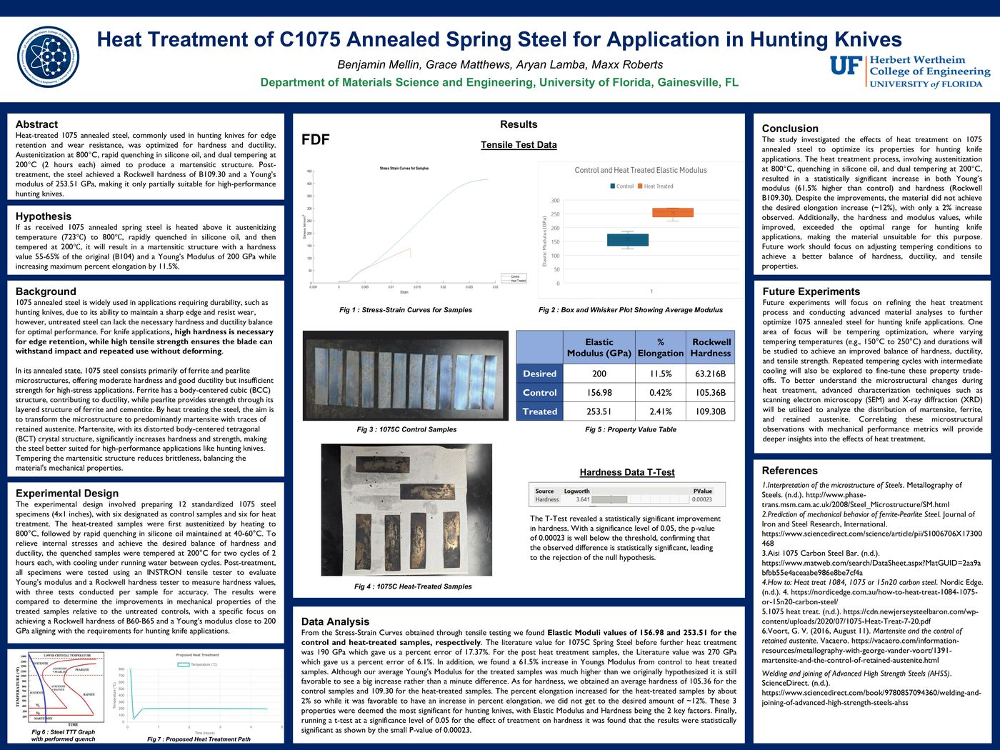
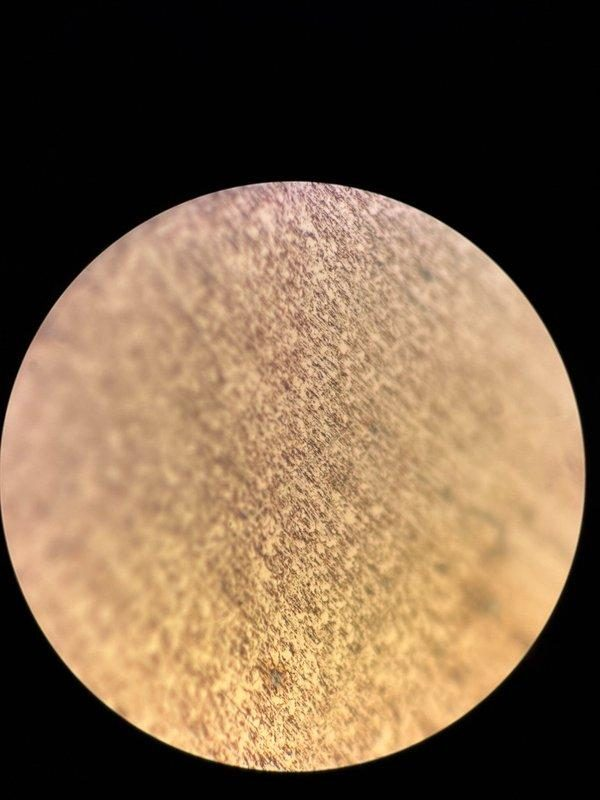
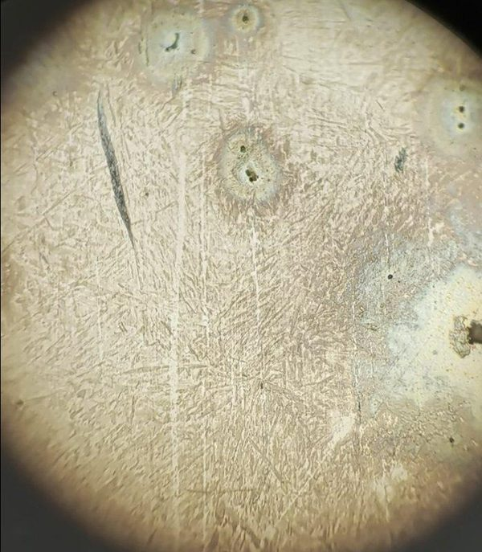
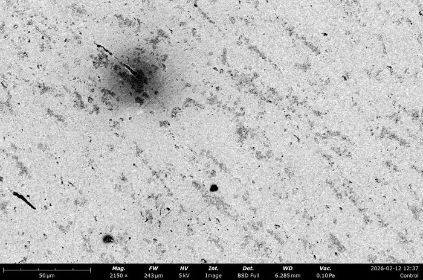
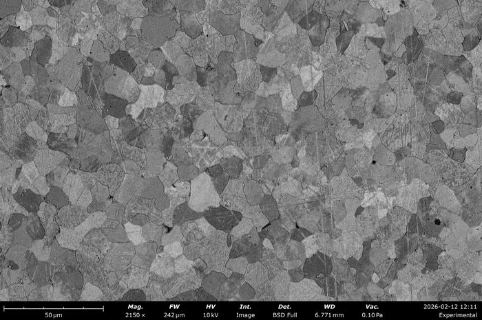
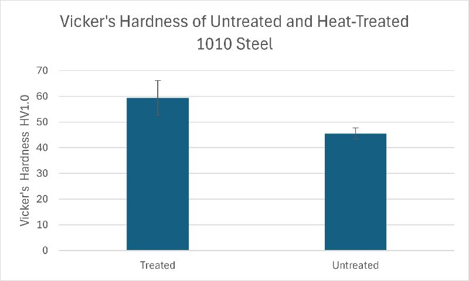
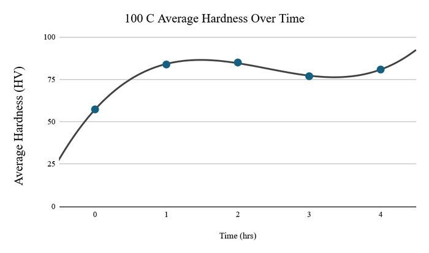
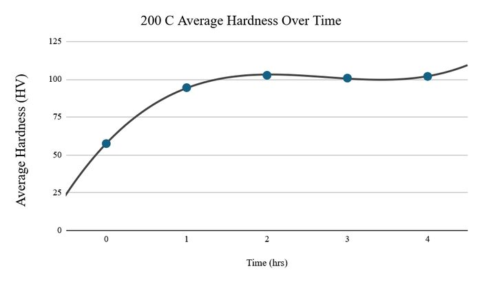

Metal Heat Treatment & Processing
Four hands-on metallurgy labs spanning steel and aluminum, tying phase diagrams and transformation theory to measured hardness, microstructure, and mechanical property outcomes.
1075 Steel Heat Treatment for Hunting Knives
Hunting knives need a balance most steels don't offer naturally, high hardness for edge retention alongside enough ductility to resist chipping. We designed a heat treatment for 1075 annealed spring steel targeting a Rockwell hardness of B60–B65 and a Young's modulus near 200 GPa, guided by the steel's TTT diagram: austenitizing at 800°C, quenching in silicone oil, then dual tempering at 200°C for two 2-hour cycles.

The treatment worked, arguably too well. Hardness and modulus both increased significantly and the difference was statistically significant by t-test, but both overshot the target range meant for knife applications, and ductility barely improved. The honest conclusion: this treatment produced a harder, stronger steel than intended, and the real design lesson was in the gap between hypothesis and result, which we used to propose a revised tempering window (150–250°C) for future iterations.
Hot Forging of 1045 Steel
This lab looked at what happens when hot forging is combined with a rapid quench, rather than just studying either process alone. AISI 1045 medium-carbon square stock was heated to 1000–1300°C (bright yellow), open-die forged from 3/4" down to 1/4" thickness on an anvil, then a cut section was water-quenched immediately to lock in the high-temperature microstructure.


Optical microscopy told the mechanism story clearly: the reference sample showed uniform ferrite-pearlite, while the forged sample showed banded, needle-like martensite with visible flow lines from the deformation itself. Both the metallurgy (martensitic transformation on quench) and the mechanical history (forging-induced texture) were visible in the same image, which made this one of the clearer cause-and-effect labs of the group.
Fine Pearlite Formation in 1010 Steel
Fine pearlite, lamellar spacing under 200 nm, offers higher hardness and yield strength than coarse pearlite while retaining useful ductility, valuable for applications like railroad wheels. Using the continuous cooling transformation diagram for low-carbon steel, we targeted normalization at 900°C followed by still-air cooling at roughly 5°C/min, fast enough to refine the pearlite without crossing into the bainite region.



Since 133 nm lamellar spacing is well under standard optical microscopy's resolution, this lab required SEM to actually see and measure what we'd produced, a useful reminder that choosing the right characterization tool is as much a part of materials engineering as choosing the right process.
Age Hardening of Al 6061
Unlike the steel labs, aluminum can't be strengthened by martensitic transformation, so age hardening (precipitation hardening) is the mechanism that matters: solution treat to dissolve precipitates, quench to trap a supersaturated solid solution, then age at an elevated temperature to grow fine, coherent precipitates that block dislocation motion. I tracked hardness across aging times of one to four hours at two temperatures, 100°C and 200°C, to map the aging curve.


The 200°C series reached near-peak hardness within the first hour and plateaued, consistent with faster precipitate nucleation kinetics at higher temperature, while 100°C aging was slower and noisier, with the 3-hour sample dipping below the 1- and 2-hour results, most likely measurement variability rather than true overaging, given how early that would be in the precipitation sequence. Comparing both curves to the pre-quench baseline of 136.6 HV also made clear neither condition reached peak hardness within the four-hour window tested.